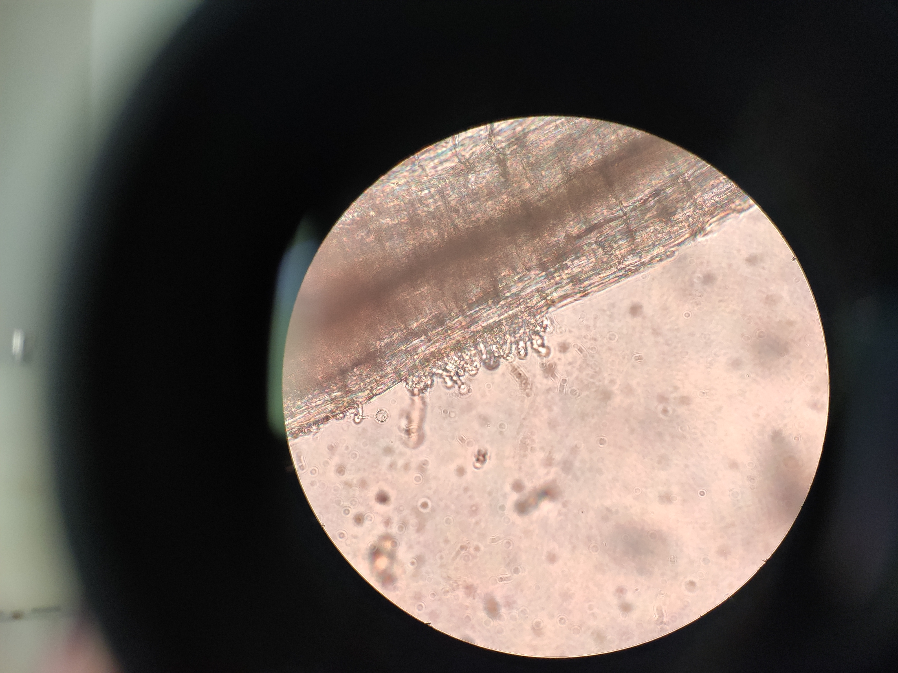
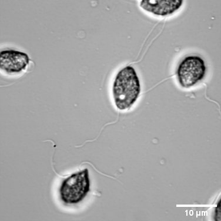
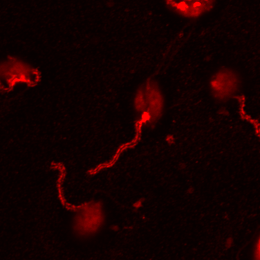

Microscopy & Image Analysis
INRAE-ISA Sophia Antipolis · Institut de Physique de Nice (InPhyNi) · 2020–2024 · France
Overview
Microscopy has been at the core of my scientific practice since 2020. Over four years, I built a comprehensive skill set spanning multiple imaging modalities, biological systems, and computational analysis tools. The work was conducted primarily at two institutions in the south of France: INRAE-ISA Sophia Antipolis, where the biological and molecular experiments were designed and performed, and the Institut de Physique de Nice (InPhyNi), where biophysical approaches and high-speed imaging were applied.
I worked predominantly with microorganisms — including oomycetes, bacteria, and ciliates — but also with plant tissues at various developmental stages. Across all projects, I was responsible for the full imaging pipeline: sample preparation, instrument setup and calibration, image acquisition, and quantitative downstream analysis.
I believe that image exploration is foundational to biology. A well-captured image does not just illustrate — it constructs evidence, reveals spatial organisation, and makes molecular mechanisms tangible. Learning to read and interrogate microscopy images trained me to think more carefully about what data actually shows, and what it does not.
Microscopy techniques
The diversity of biological questions I worked on required working fluently across several imaging modalities, each suited to different spatial scales, sample types, and experimental goals.
Selected images
The images below represent a cross-section of the imaging work. They span multiple organisms, modalities, and analysis approaches — from classic bright-field observation to immunofluorescence and automated tracking.




From left: (1) Automated tracking overlay on a Enterobacteria specimen — part of the image analysis pipeline. (2) High-speed video of zoospore motility — used for flagellar beat analysis. (3) Light microscopy through eyepiece — plant root tissue with zoospores releasing. (4) DIC image of Phytophthora parasitica zoospores showing biflagellate morphology. (5) Confocal immunostaining of zoospore surface — mastigoneme proteins detected with a custom-raised antibody, red channel.
Organisms & sample preparation
The primary model organism throughout my PhD was Phytophthora parasitica, an oomycete and significant pathogen of crops including tomato and tobacco. Its motile zoospore stage — equipped with two flagella — is the infective form, and understanding how zoospores sense and navigate towards host roots was a central question of my research.
I also worked with ciliates (including Vorticella species) as a complementary system for studying microorganism motility, feeding behaviour, and contractile dynamics. These organisms provided rich high-speed imaging data for developing and validating automated tracking methods.
Beyond microorganisms, I imaged plant tissues at multiple stages and anatomical sites. Root tissues were examined during Phytophthora infection, requiring thin longitudinal sections to localise infection events. I also worked with leaf cells to study the localisation of plant proteins, which involved different preparation and imaging strategies compared to root work.
Sample preparation work included:
- Zoospore liberation from sporangia and synchronisation for timed experiments
- Immunofluorescence protocols: fixation, permeabilisation, primary and secondary antibody incubation, mounting
- Custom antibody production for mastigoneme protein immunostaining
- Preparation of observation chambers for live imaging of motile organisms
- Plant root sectioning and staining for infection site localisation
- Leaf cell preparation for plant protein localisation studies
- Sample preparation for electron microscopy (fixation, dehydration, sputter coating)
Image analysis & software
Acquiring good images is only half the work. Extracting quantitative, reproducible information from them requires robust analysis pipelines — and this became a core technical focus of my research.
For routine image processing and quantification I used ImageJ/Fiji, which I applied to tasks including fluorescence intensity measurements, co-localisation analysis, particle counting, and manual tracking. For instrument-specific processing and confocal image reconstruction I worked with Zeiss ZEN and Nikon software.
For more elaborate analysis — particularly automated tracking of motile microorganisms across large image datasets — I developed custom pipelines in MATLAB. These scripts handled background subtraction, organism segmentation, trajectory linking, and extraction of motility parameters (speed, turning rate, confinement ratio). Developing these pipelines required close iteration between biological knowledge and computational implementation, and taught me to think carefully about the assumptions embedded in any automated analysis approach.
The machine learning image analysis tool I developed as part of the INRA/CNRS project (2021–2025) grew directly from this hands-on analysis work, and is documented separately on the Projects page.
Software used
- ImageJ / Fiji — general-purpose image processing and manual quantification
- Zeiss ZEN — confocal acquisition, z-stack reconstruction, channel unmixing
- Nikon — electron microscopy image processing
- MATLAB — custom automated tracking and analysis pipelines
Why microscopy matters to me
Microscopy is often described as a technical skill. But after four years working with it seriously, I think of it more as a way of thinking. To image something well, you have to understand it — what it is, how it behaves, what you are actually trying to see and why. A blurry image or a saturated fluorescence channel is not just an aesthetic problem; it represents missing or misleading data. Getting it right requires biological intuition, physical understanding of the instrument, and careful attention to experimental design.
What I find most compelling about microscopy is precisely this: you can construct direct visual evidence of molecular and cellular mechanisms. A fluorescently tagged protein at a specific location at a specific time is not an inference — it is an observation. Combined with quantitative analysis, it becomes an argument. Learning to make that argument clearly and rigorously has shaped how I approach scientific questions more broadly.